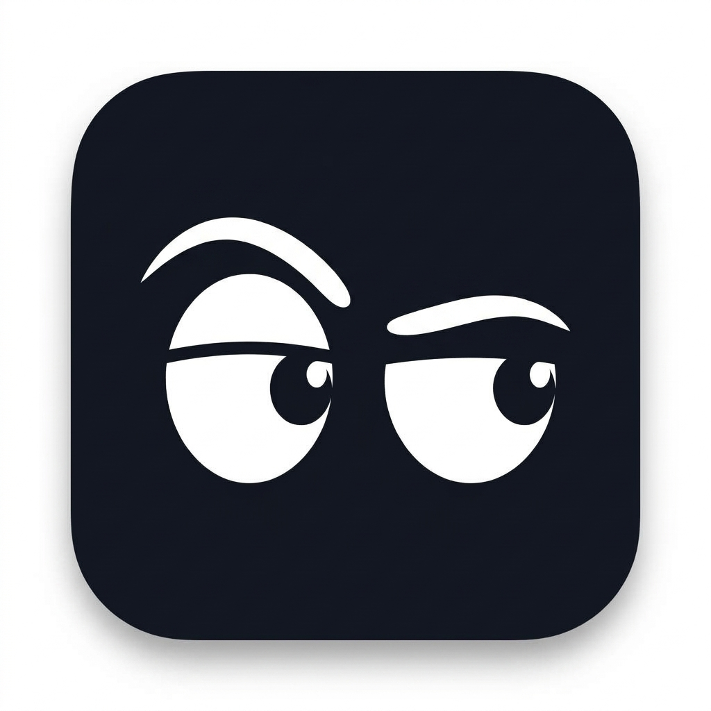
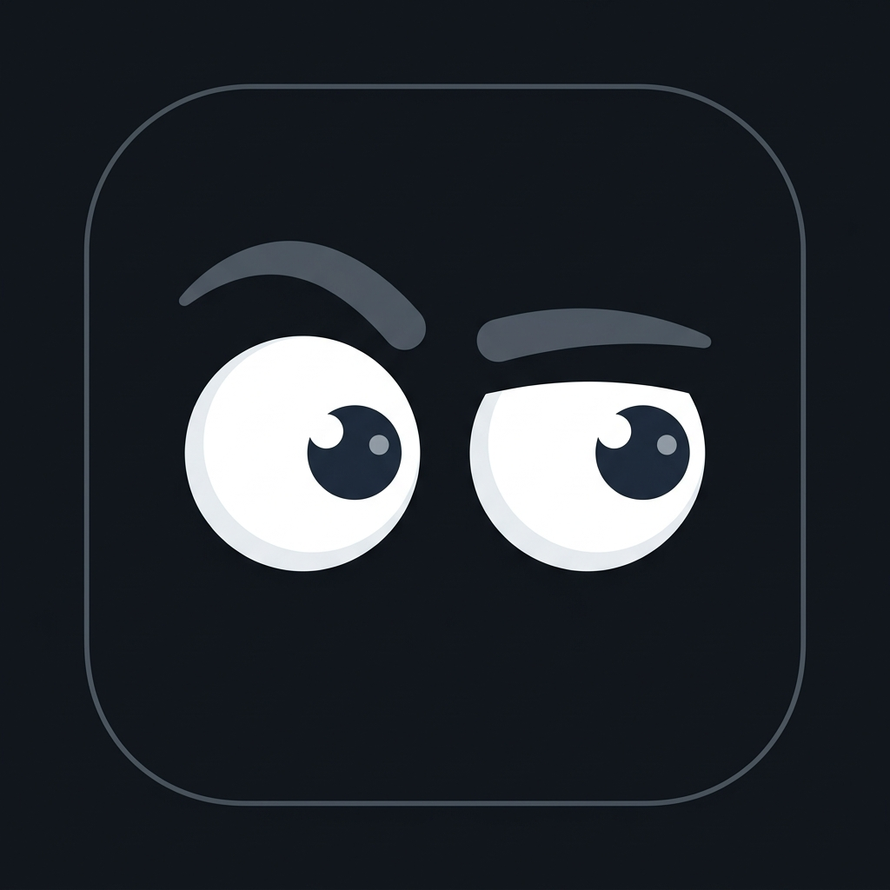
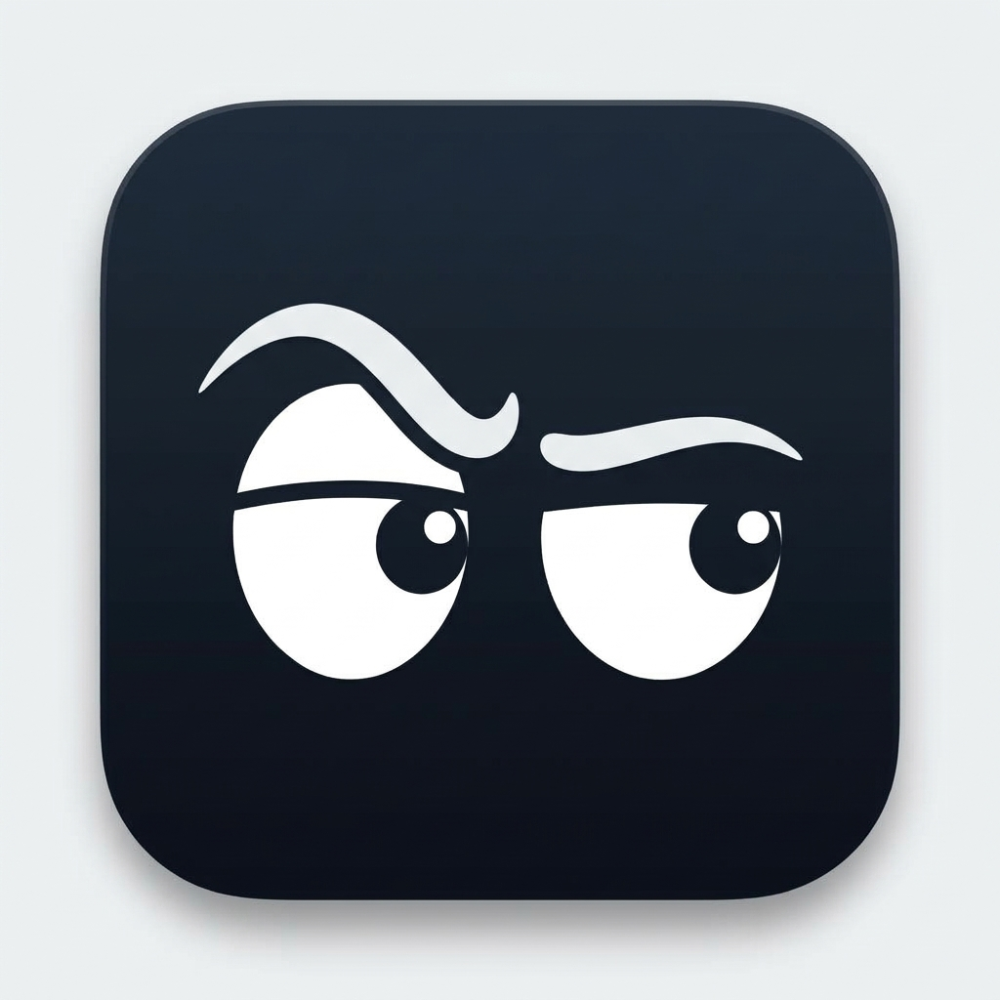
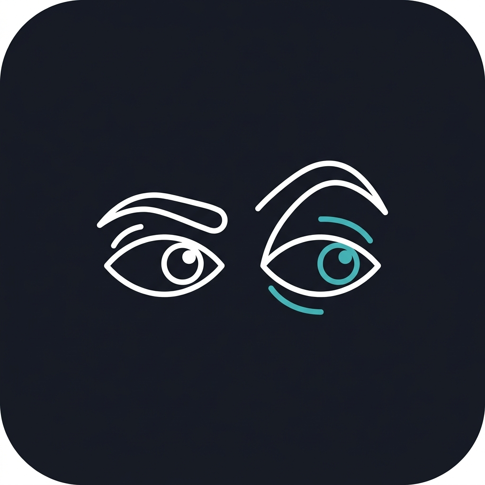

⭐ Rekomendasi 1 (D.2)

D.2 — Sharp Minimalist Vector
Siluet vektor hitam-putih murni tanpa outline komik. Sangat tajam dan percaya diri. Alis kiri terangkat dengan lekukan tajam, mata kanan menyipit kritis. Ekstrem keterbacaannya di ukuran Dock terkecil.
⭐ Rekomendasi 2 (D.3)

D.3 — Sleek Tech Calm
Pendekatan modern yang tenang dan matang (*mature & sleek*). Alis abu-abu arang dengan bentuk mata melingkar lembut dan pupil gelap melirik ke kanan. Border squircle 1px sangat rapi ala Apple HIG.
Variasi D.1

D.1 — Soft Arch Vector
Bentuk alis abu-abu terang yang melengkung dinamis di atas kelopak mata. Tetap mempertahankan ekspresi heran/kritis tapi jauh lebih bersih tanpa stroke hitam tebal.
Variasi D.4

D.4 — Monoline Tech Stroke
Gaya monoline / icon stroke outline dengan sentuhan garis putih & cyan minimalis. Sangat geometris dan menyerupai icon toolkit developer (ala Lucide / Phosphor).